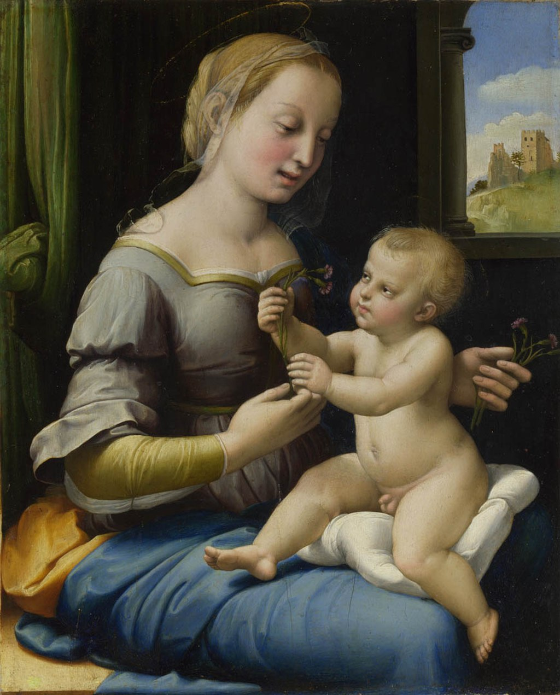

<head>
<meta charset="UTF-8" />
<meta name="keywords" content="drawing, painting" />
<meta name="description" content="drawings by Sunjy" />
<title>Sunjy</title>
<link rel="shortcut icon" type="image/x-icon" href="../../mImages/mCommon/favicon.ico" media="screen" />
<link rel="stylesheet" type="text/css" href="../../mCsses/mCommon/mCssA.css" />
<link rel="stylesheet" type="text/css" href="../../mCsses/mCommon/mCssB.css" />
<link rel="stylesheet" type="text/css" href="../../mCsses/mCommon/mCssC.css" />
<link rel="stylesheet" type="text/css" href="../../mCsses/mCommon/mCssD.css" />
<link rel="stylesheet" type="text/css" href="../../mCsses/mContent/mCssA.css" />
<link rel="stylesheet" type="text/css" href="../../mCsses/mContent/mCssB.css" />
<link rel="stylesheet" type="text/css" href="../../mCsses/mContent/mCssC.css" />
<link rel="stylesheet" type="text/css" href="../../mCsses/mContent/mCssD.css" />
</head>
<script type="text/javascript" src="../../mScripts/mContent/mContentAA.js" /></script>
<script type="text/javascript" src="../../mScripts/mContent/mContentAB.js" /></script>
<script type="text/javascript" src="../../mScripts/mContent/mContentAC.js" /></script>
<script type="text/javascript" src="../../mScripts/mContent/mContentAD.js" /></script>
<script type="text/javascript"></script> 
<script type="text/javascript">
document.write('<div class="mImgAbsolute"></div>');
/*
document.write('<p class="mFontSizeBColor" />From a white paper...</p>');
document.write('<table class="center"><tr><td>');
document.write('');
document.write('</td></tr></table>');
*/
</script>


<script type="text/javascript">
document.write('<p class="mFontSizeBColor" />The Madonna of the Pinks</p>');
document.write('<p class="mFontSizeSColor" />By Raphael. “The Madonna of the Pinks” depicts the Virgin Mary playing with the Christ child and handing him carnations. The Italian title is the Madonna of the Carnation.<br><br>The botanical name of these flowers is dianthus, which in Greek mean ‘Flower of God.’<br><br>The sunny landscape through the arched window shows a ruined building, symbolizing the collapse of the pagan world at the birth of Christ. The dimly-lit room setting demonstrates the influence of Netherlandish art on this painting.<br><br>This masterpiece is a relatively small devotional painted for Christian contemplation, and its owner could have held the painting in their hand. <br><br>Raphael has transformed this familiar subject from the earlier formal stiffly posed pictures of earlier traditions into a new approach. He is celebrating the tender emotions between a young mother and her child.</p>');
document.write('<table class="center" /><tr><td>');
document.write('<br>The botanical name of these flowers is dianthus, which in Greek mean ‘Flower of God.’<br><br>The sunny landscape through the arched window shows a ruined building, symbolizing the collapse of the pagan world at the birth of Christ. The dimly-lit room setting demonstrates the influence of Netherlandish art on this painting.<br><br>This masterpiece is a relatively small devotional painted for Christian contemplation, and its owner could have held the painting in their hand. <br><br>Raphael has transformed this familiar subject from the earlier formal stiffly posed pictures of earlier traditions into a new approach. He is celebrating the tender emotions between a young mother and her child." />');
document.write('</td></tr></table>');
</script>


